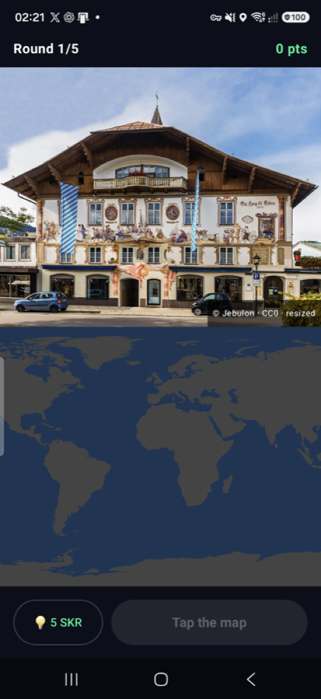

Guess where on Earth the photo was taken.
Five places a day. The same five for every Seeker.
CLOCK IN — a Solana Mobile hackathon · Android · Mainnet
Seeker Atlas #3 — 18450/25000 🟩🟩🟨🟩🟧

atlas1|day|score|player|genesis|hints that references one board account. The leaderboard is that account's history.Stuck on a photo? Burn 5 SKR to highlight its continent on the map.
BurnChecked on the SKR mint — tokens leave circulation. Nobody, including us, receives them.